>_ make a landing page for this repository
splash-page
A Claude Code skill that builds a repository's landing page and checks every number on it.
Ask Claude for a landing page and the skill lays down this design: a prompt line and wordmark, Star on GitHub, a command to copy, the real program running in the first screen, and four numbers measured from the repository. The page you are reading was built with it.
/plugin install goat-skills --marketplace https://usareur-af.github.io/goatdocs/claude/marketplace.jsonIn Claude Code. Once per person; the skill is then present in every repository, including a new, empty one.
rows of examples.mdfind templates -type f | wc -lWIDTHS in fitcheck.pybuild.py reads every importEvery page, one design
Each project gets its own theme, taken from what it does. The layout and the checks are the same on every page. Each picture is the first screen of the live page; select it to open the page. The catalogue has every page with its own words and numbers.
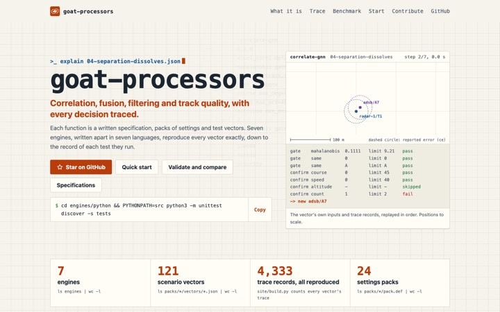
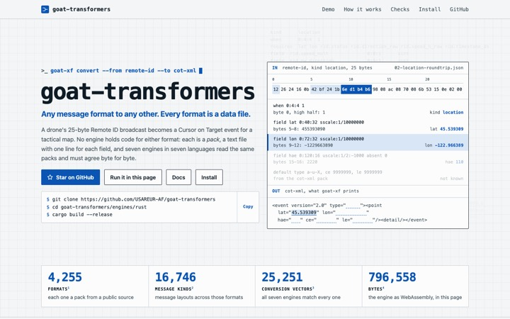
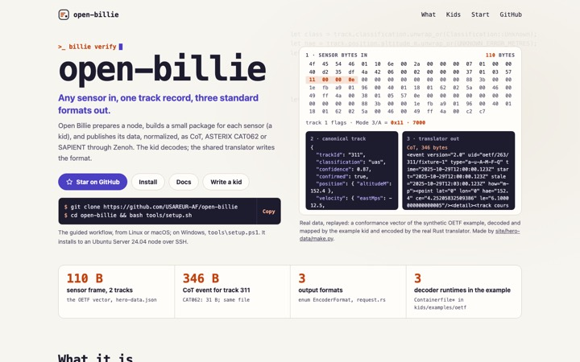
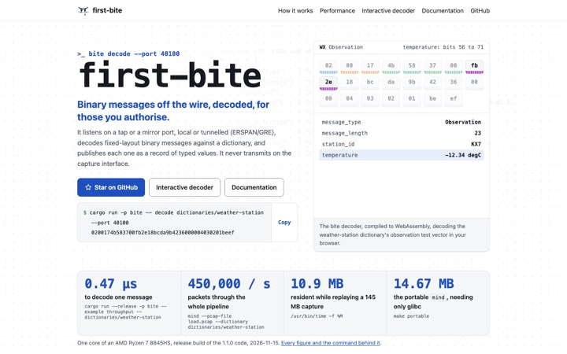
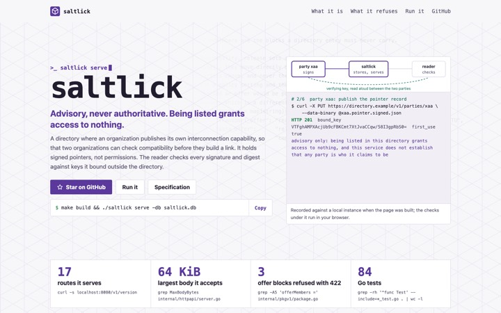
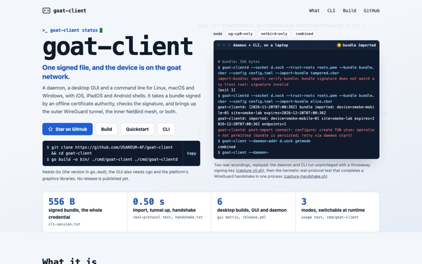
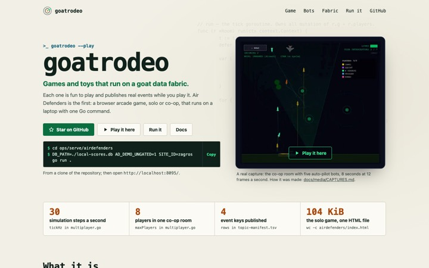
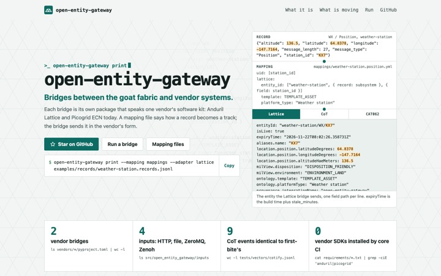
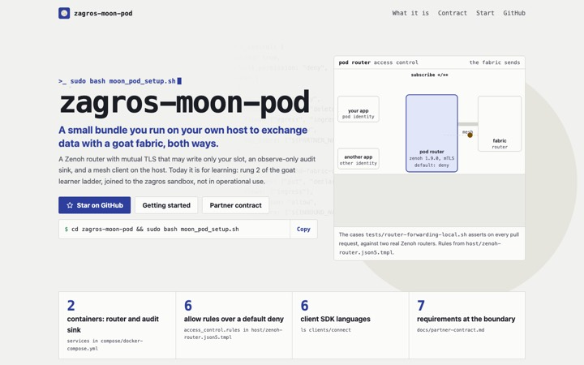
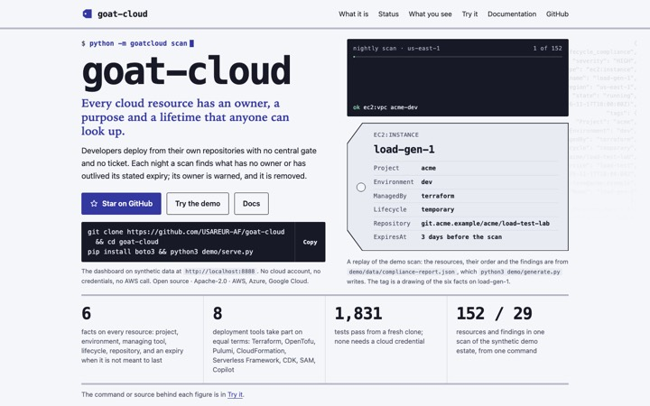
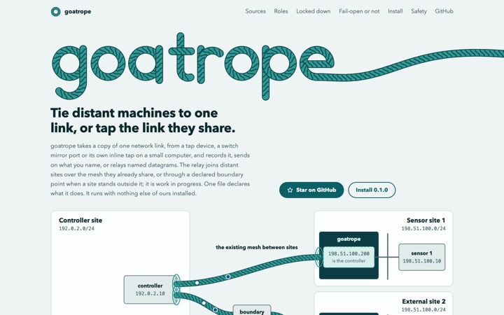
build.py, state drawn rather than colored
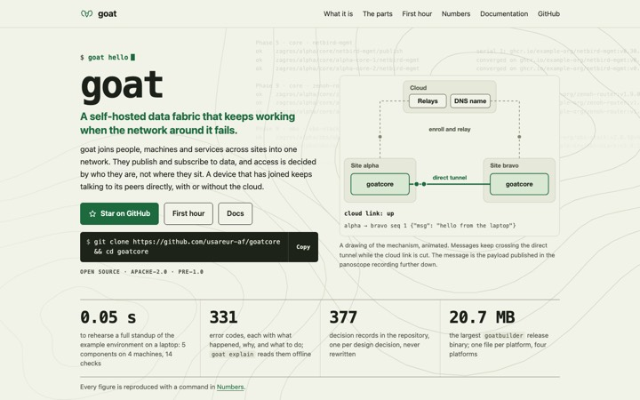
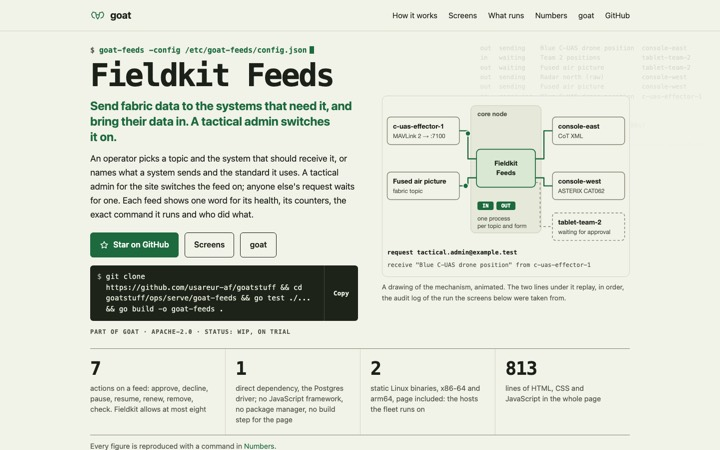
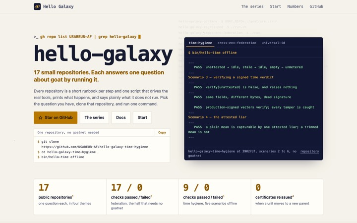
What the skill decides
The skill is a set of written rules, a skeleton and two checks. Claude follows the rules; the checks fail the pull request when a page breaks them.
The first screen
Prompt line, wordmark, a one-line tagline, two or three sentences, Star on GitHub first, then one command with Copy. Beside it, the real program running: a test vector, a decoded capture, a recorded session, the game itself. Never a mock-up.
The numbers
Four facts about the product, each in data-measure, each measured from the repository by site/build.py. Stars, commits and contributor counts are left out.
The rest of the page
Sections whose headings make a claim, figures drawn by code in the repository, light and dark, system fonts, no request to another host, no example data that names a real deployment.
| The project is | The page goes | Served at |
|---|---|---|
| its own public repository | site/ in that repository, with .github/workflows/pages.yml | usareur-af.github.io/<repo>/ |
| a component inside a larger repository | goatdocs, docs/goat/<slug>/index.html, one self-contained file | usareur-af.github.io/goatdocs/goat/<slug>/ |
| a facet of a page that exists | a second page in the same site/, such as contribute.html | beside its parent |
| a private repository | no public page unless its content is public |
It lives in goatdocs and installs everywhere
The skill is a folder in goatdocs. The goatdocs site publishes a one-file plugin catalogue that points at that folder; the plugin goat-skills holds only this skill and the changelog skill, and Claude Code fetches that folder alone, about 100 KB. Install it once and it is present in every repository you open, including one with no files yet.
A repository can ask for the plugin itself. With this in its .claude/settings.json, Claude Code offers the install to anyone who opens the repository:
{ "extraKnownMarketplaces": { "goat": { "source": { "source": "url", "url": "https://usareur-af.github.io/goatdocs/claude/marketplace.json" } } }, "enabledPlugins": { "goat-skills@goat": true } }
The skill is never copied into another repository, so there is one version of it.
USAREUR-AF/goatdocs ├── docs/claude/marketplace.json the plugin catalogue, served by the site └── .claude/skills/splash-page/ ├── SKILL.md the rules Claude follows ├── scaffold.py lays down the skeleton, never overwrites ├── examples.md every live page, what it shows └── templates/ ├── pages.yml check on a pull request, deploy from main └── site/ index.html, site.css, site.js, icon.svg, build.py, fitcheck.py, README.md
A number that drifts fails the build
Every number on a page sits in an element that names how it is measured. site/build.py measures it from the repository and fails the pull request when the page says something else. This is how goat-processors states its vector count:
<span class="n" data-measure="vectors">121</span>
If three vectors were added and the page still said 121, the build would stop with:
site/index.html: vectors says 121, the tree gives 124
The same run fails while any placeholder from the skeleton remains, and runs fitcheck.py, which loads the page in headless Chrome and fails when a command box is cut off at 1440 or 390 px or the page scrolls sideways.
Publishing is a person's call
The workflow checks every pull request that touches the page or anything it measures. It deploys from main only after a repository owner sets Pages to deploy from GitHub Actions. Until then it checks the page and skips the deploy with a notice. Turning Pages on and setting the repository's website both make a page public, so the skill asks first.
Quick start
In Claude Code, inside the repository that needs a page:
/plugin install goat-skills --marketplace https://usareur-af.github.io/goatdocs/claude/marketplace.json /goat-skills:splash-page
Or ask in your own words: "make a landing page for this repository". Without Claude, the scripts run alone, from a clone of goatdocs:
python3 -I .claude/skills/splash-page/scaffold.py site <repo> --name <repo> --repo USAREUR-AF/<repo> python3 -I site/build.py